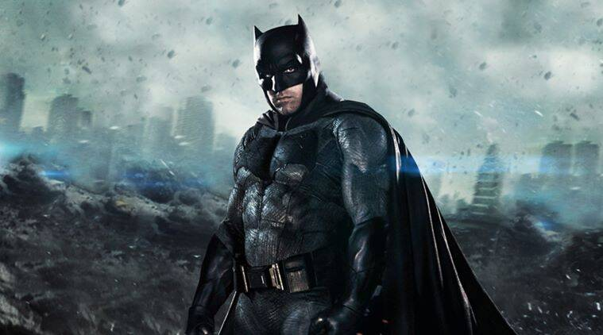
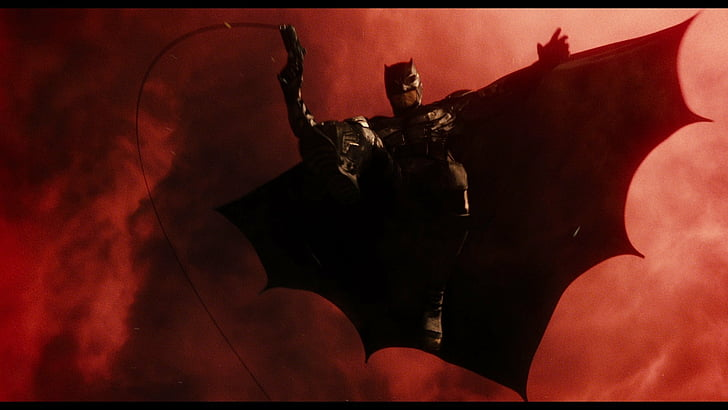
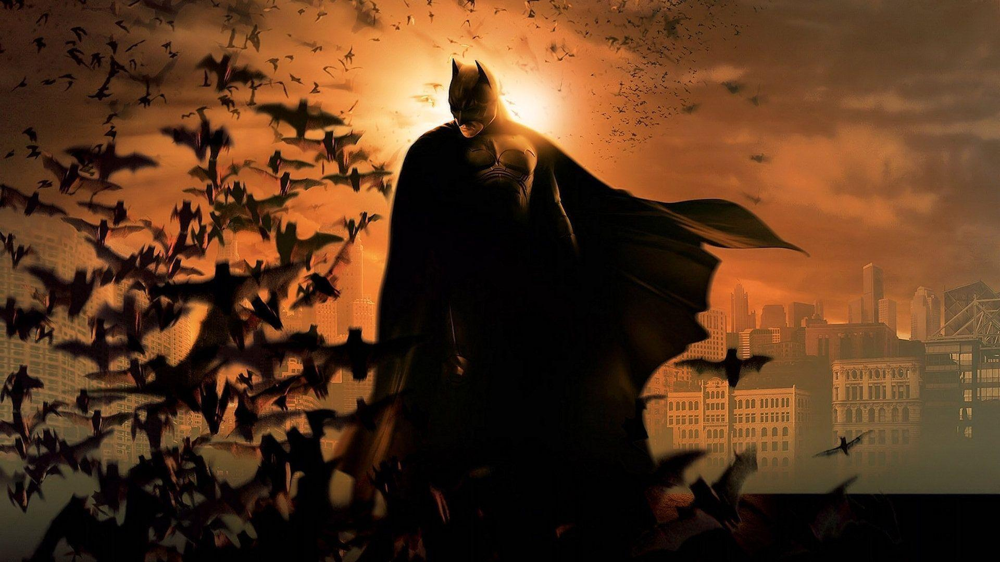
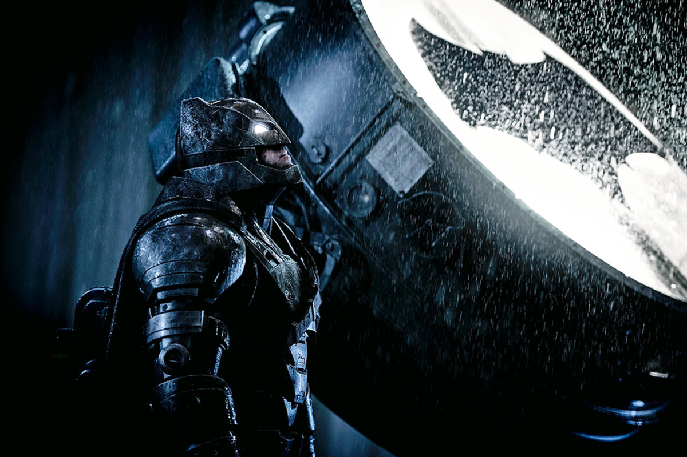
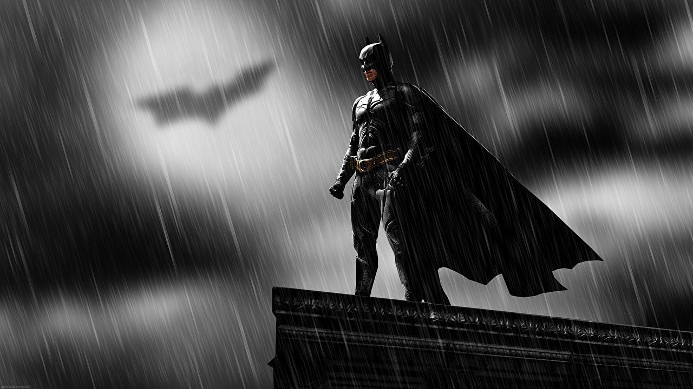
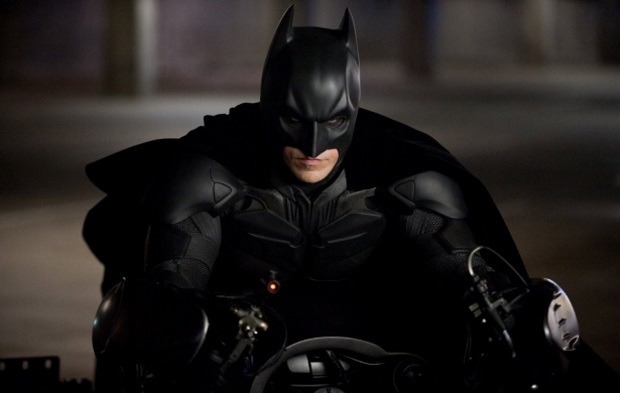

1 / 10
Justice, not vengeance.
2 / 10
WHY DO WE FALL? SO THAT WE CAN LEARN TO PICK OURSELVES BACK UP.
3 / 10

WHATEVER DOESN’T KILL YOU, SIMPLY MAKES YOU STRONGER.
4 / 10
I made a promise to him, on his grave.
5 / 10

I've spent a lot of time trying to divide us.
6 / 10

I need to bring us together, and make this right.
7 / 10

THE NIGHT IS DARKEST JUST BEFORE THE DAWN. AND I PROMISE YOU, THE DAWN IS COMING.
8 / 10

SOMETIMES IT’S ONLY MADNESS THAT MAKES US WHAT WE ARE.
9 / 10

OUR GREATEST GLORY IS NOT IN EVER FALLING, BUT IN RISING EVERY TIME WE FALL.
10 / 10

EVERYTHING’S IMPOSSIBLE UNTIL SOMEBODY DOES IT.